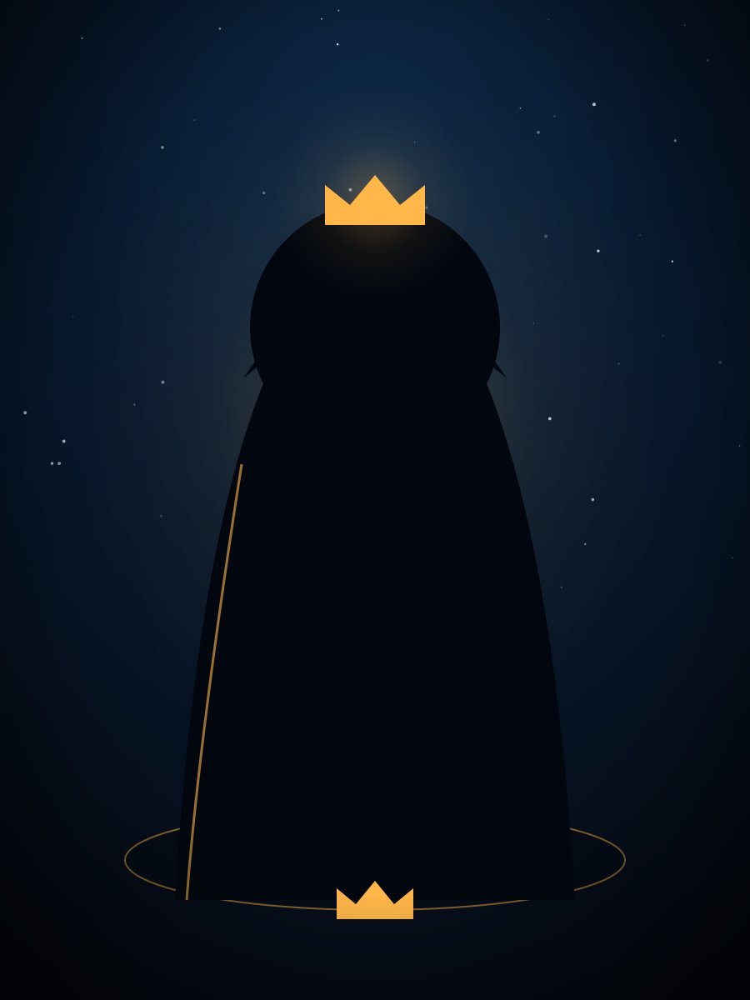

Policy Authority
The Sovereign
Rules not by whim but by charter, deciding who may pass and what each may touch.
In Cisco TermsCisco ISE — the central policy engine that authenticates and authorizes every request.